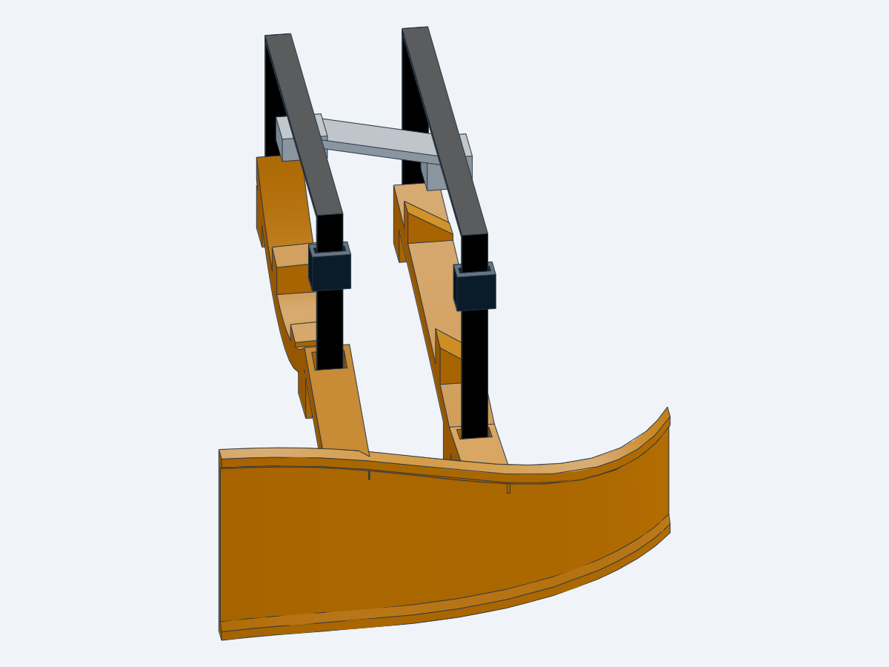

An arm-mounted deflector and a body-fixed shroud, adapted to the captured Corolla geometry. The design space also includes split vanes, twin ramps and open relays between mounting points.
The mounting geometry is a practical proposal. Installed fit, support strength, heat durability and cooling performance remain unverified.
CURRENT MAINLINE MODELS
Compare shape and mounting.

V2A: source-guided contact lands, complete tie paths and an inferred connecting retainer.
Context views include all 14 original source regions as a simplified display, at the captured hanging-suspension pose. Small openings and thin boundaries may simplify. Use the native model and source checks for engineering review. The original full scan remains local.
The upright curved guide has two shaped cradle bands, four local lower-skin contact lands, tie channels, two complete wrapping ties, buckles and a separate connecting retainer. The upper closure and 8 × 1.5 mm tie reservations are inferred. Liner take-up and retention under load need physical verification.
V2B · body attachment
The broad apron and curved wall retain two adjustable flanges and a local upright tongue. Two removable returns reach the confirmed stationary panel family. Their fixing positions, M6 hardware seeds and backing are inferred. The tongue is unused in this two-point proposal; it is not attached to nearby moving or unidentified context.
Saved geometry and motion
Every physical solid passes saved native soundness and a meaningful parameter edit followed by export and reopening. Internal volume overlaps are clear. Original-source transverse crossing checks pass locally. All saved parts separate from the four tested brake-source regions at 19 nominal steering samples.
This does not establish continuous clearance, suspension travel or the complete wheel envelope.
Air path and obstruction
V2A is held: its saved exit rays meet the shield first in captured and straight poses;2 of15 opposite-lock rays reach rotor metal first. V2B gives broad rotor/caliper sightlines at nominal straight and opposite lock. These are geometric diagnostics, not airflow capture, vane entry or cooling. The next V2A comparison uses low split vanes.
CREATIVE DIRECTIONS · NOT YET BUILT
Choose the mechanism, then shape the guide.
Low saddle + split vanes
Keep the arm mount low and use two broad, staggered turning surfaces. Vary their spacing, height, sweep and hand-off to preserve an open escape path around the arm and shield. Two vanes do not automatically improve flow.
Body-mounted twin ramp
Use the broad stationary pickup, then divide the turn into two open ramps with room for moving brake parts between them. Separate the pickup’s width from the downstream turn. Panel support, underbody exposure and service removal remain design constraints.
Liner-fed open relay
Let a stationary liner outlet feed a separate arm guide across a free-air gap. This avoids a hose across the joint, but steering, suspension movement and jet spread can lose the hand-off. V1 stays unchanged while the relay is evaluated separately.
Knuckle-side open receiver
A compact crescent or cheek can stay aligned with the rotor as it steers. Its nonrotating support, heat, wheel clearance and shield opening must be established. Structural carrier bolts and rotating wheel studs are not convenient substitute mounting points.
Compare capture area, approach angle, turning radius, bypass opening, mounting stiffness, heat, drainage, debris exposure and removal access together. Donor photographs guide mechanisms and proportions; they do not supply Corolla dimensions.